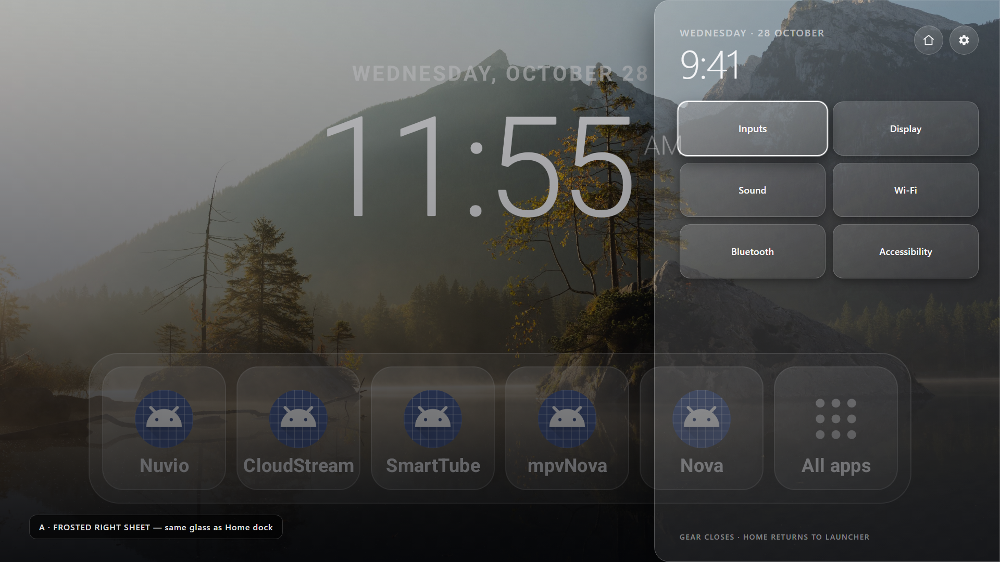
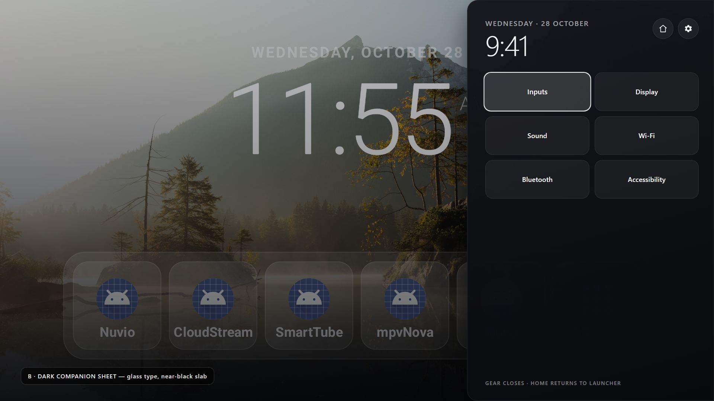
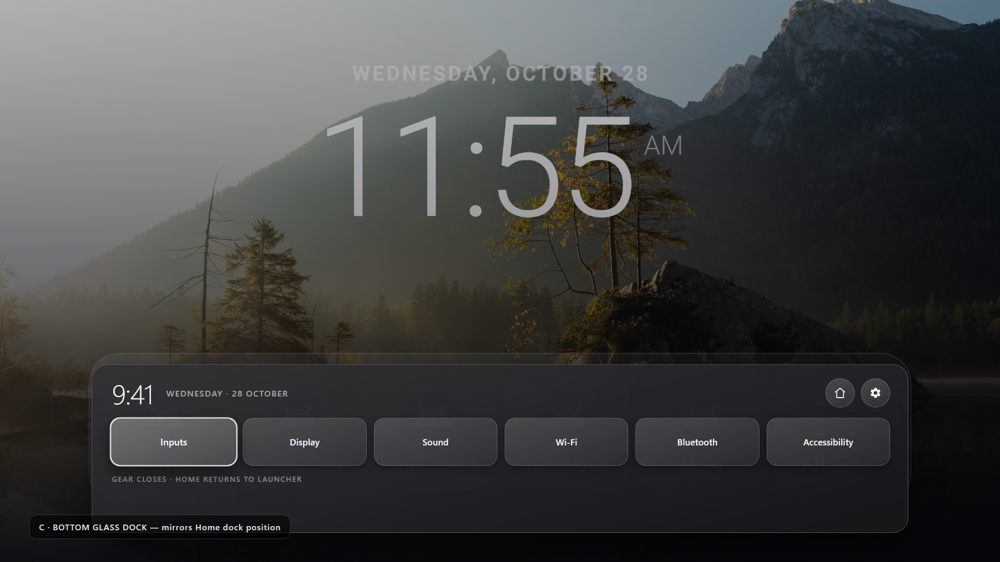
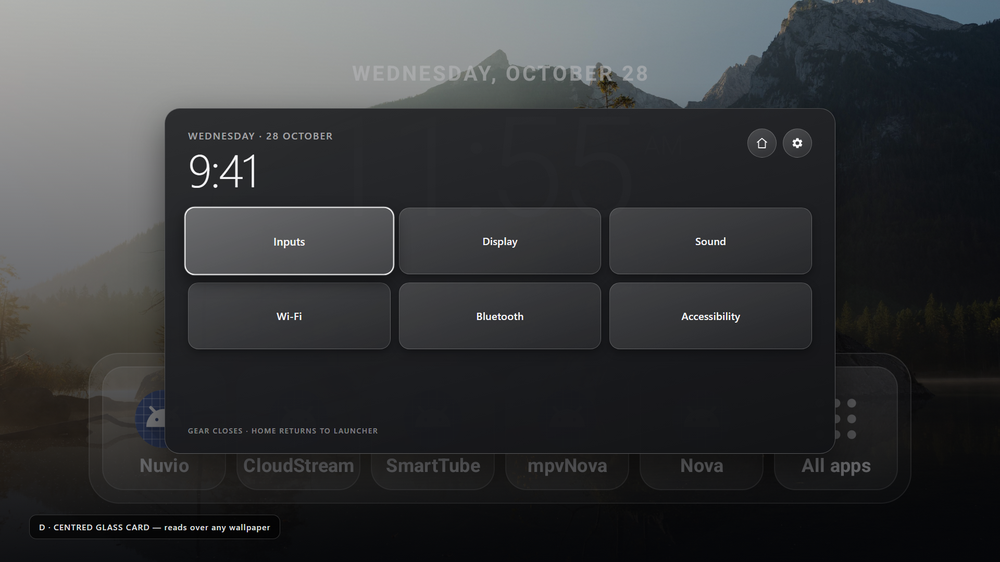

Quick panel — four ways to match the launcher
All four sit over the real launcher screenshot, at 1920×1080. Click an image for full size.

A · Frosted right sheet — same glass tokens as the Home dock.

B · Dark companion sheet — glass type and radii, near-black slab.

C · Bottom glass dock — mirrors Home's dock position, collides with it.

D · Centred glass card — covers Home's clock, needs heavy fill.